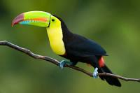

Пти́цы (лат. Aves) — группа теплокровных яйцекладущих позвоночных животных,
традиционно рассматриваемая в ранге отдельного класса[комм. 1].
Хорошо обособлена от остальных групп современных животных.
Один из наиболее характерных признаков — покров из перьев,
предохраняющий тело от неблагоприятных изменений температуры и играющий важную роль при полёте[1].
Способность к полёту — важнейшая особенность птиц (отсутствие её у некоторых видов — вторичное явление)[2].
Передние конечности приобрели форму крыльев. Птицы обладают особым строением органов дыхания и пищеварения, что тесно связано с их способностью летать.
Ещё один отличительный признак птиц — наличие клюва[1][2].